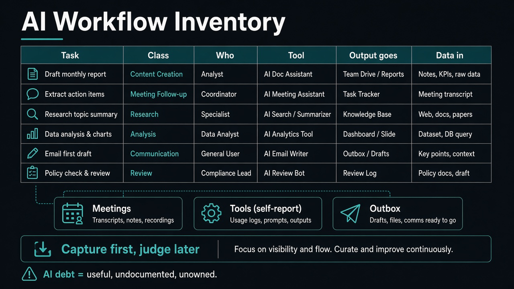

Name the AI work the team already runs
Source: Scrum.org / Stefan Wolpers (@Scrumdotorg)
original post · blog
What it claims
Individuals know their own AI shortcuts; nobody sees the sum. An AI Workflow Inventory lists one row per recurring task (task, process, provisional class, frequency, who, tool, where output goes, what data enters the model). Capture first, judge later — a row is not approval. Sources: last 30 days of meetings, self-reported tool use, and the outbox. Group into provisional task classes by output and audience. “AI debt” is useful, undocumented, unowned work — including unattended jobs and shortcuts nobody approved.
Why it matters for a PO
Scrum Teams already draft backlog items, summaries, and acceptance criteria with models, often without a shared Definition of Done or owner. Transparency comes before Assist / Automate / Avoid decisions. Without the inventory, the PO cannot see stakes on the way out or exposure on the way in.
3 takeaways
- Separate who and tool into columns; people and licenses change, the task stays.
- Output destination and data-entering-the-model are different risks — do not conflate them.
- Capture unapproved shortcuts on purpose, or the tidy list describes a team that does not exist.
Practice this week
Book 60 minutes with the team. Aim for eight rows from meetings, tools, and outbox. Name a provisional class for each. Pick one class for an Assist / Automate / Avoid conversation next Sprint — and fix any boundary breach (e.g. candidate names in a model) immediately.